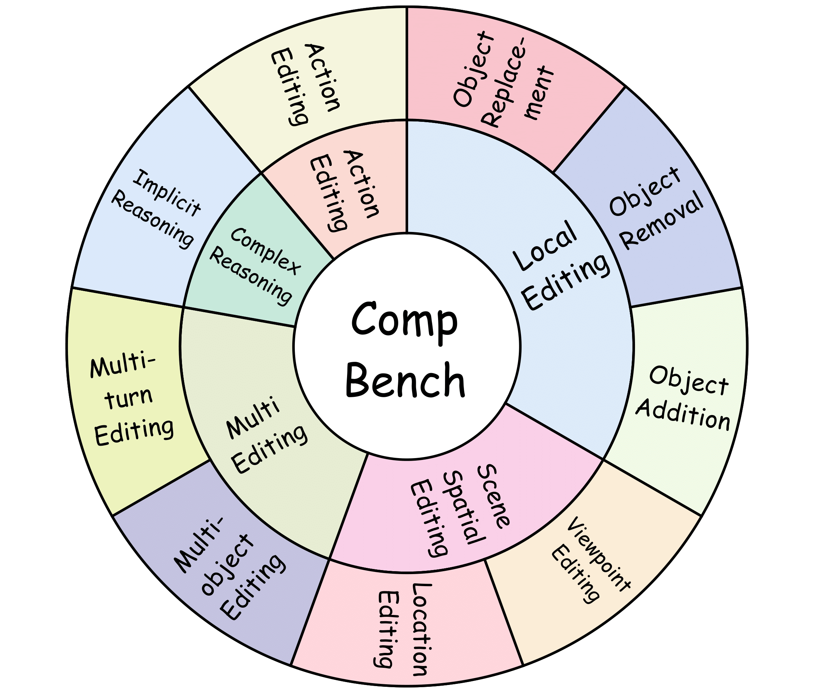
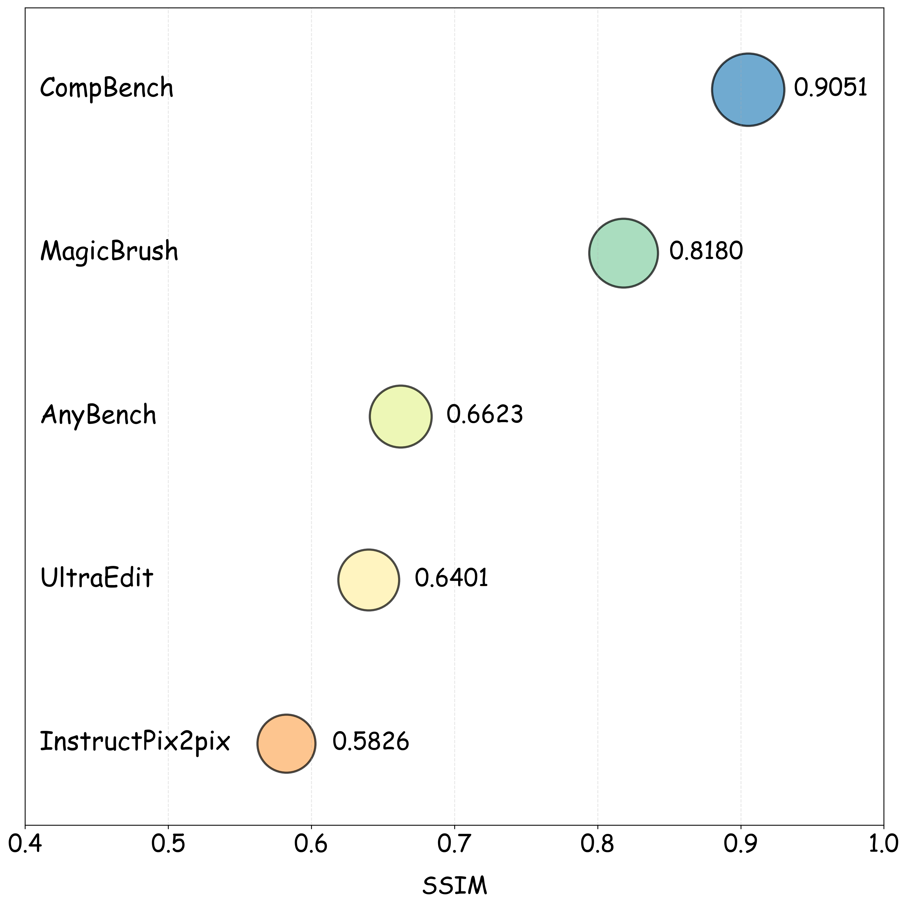
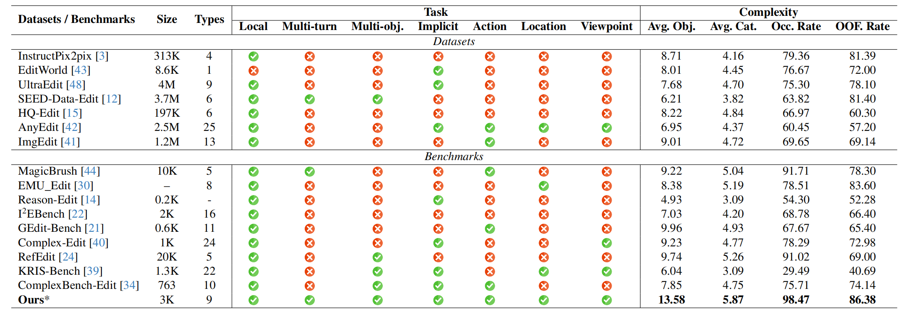
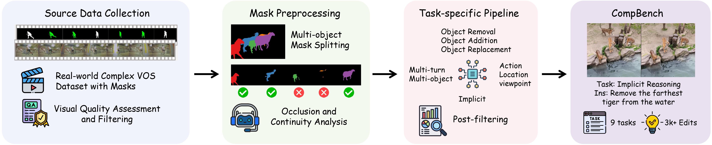
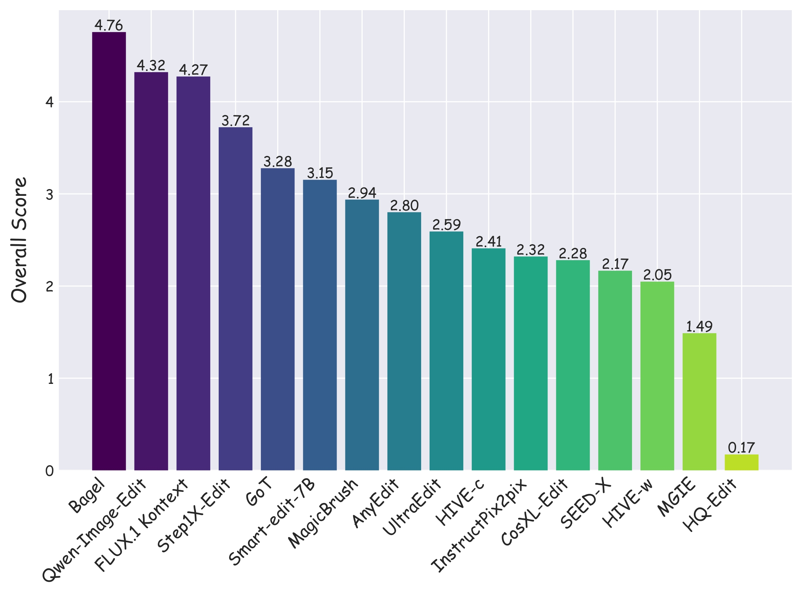
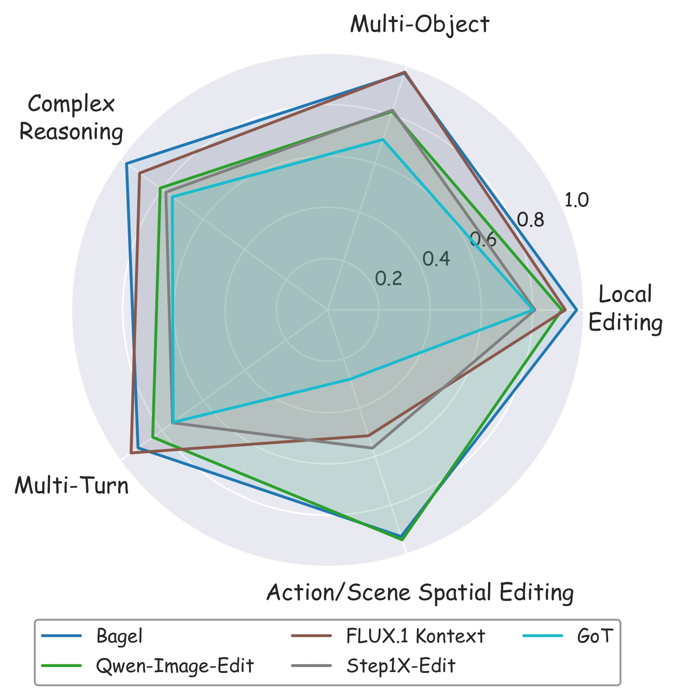
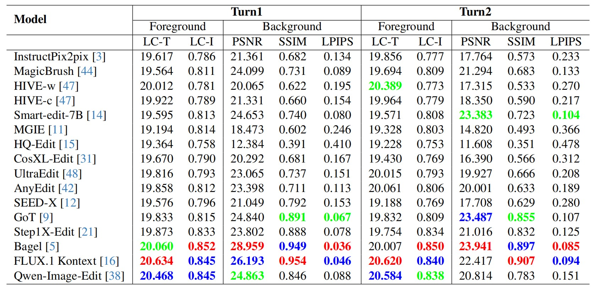
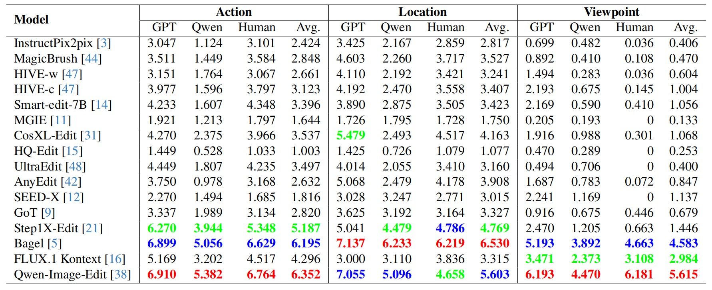
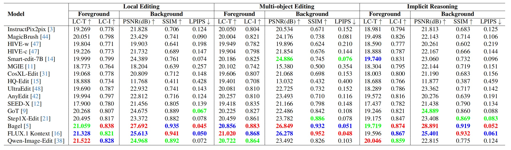

While real-world applications increasingly demand intricate scene manipulation, existing instruction-guided image editing benchmarks often oversimplify task complexity and lack comprehensive, fine-grained instructions. To bridge this gap, we introduce CompBench, a large-scale benchmark specifically designed for complex instruction-guided image editing. CompBench features challenging editing scenarios that incorporate fine-grained instruction following, spatial and contextual reasoning, thereby enabling comprehensive evaluation of image editing models' precise manipulation capabilities. To construct CompBench, we propose an MLLM-human collaborative framework with tailored task pipelines. Furthermore, we propose an instruction decoupling strategy that disentangles editing intents into four key dimensions: location, appearance, dynamics, and objects, ensuring closer alignment between instructions and complex editing requirements. Extensive evaluations reveal that CompBench exposes fundamental limitations of current image editing models and provides critical insights for the development of next-generation instruction-guided image editing systems.
Our complex instruction-guided image editing benchmark, CompBench, contains 3k+ image-instruction pairs. To enhance the comprehensiveness of evaluation, we categorize editing tasks into five major classes with specific tasks based on their characteristics:(1) Local Editing: focuses on manipulating local objects, including object removal, object addition and object replacement. (2) Multi-editing: addresses interactions among multiple objects or editing steps, including multi-turn editing and multi-object editing. (3) Action Editing: modifies the dynamic states or interactions of objects. (4) Scene Spatial Editing: alters scene spatial properties, consisting of location editing and viewpoint editing. (5) Complex Reasoning: requires implicit logical reasoning, including implicit reasoning.


Every sample in CompBench is meticulously constructed through multiple rounds of expert review, ensuring the highest quality of edits. Unlike other benchmarks where editing failures are common, all data in CompBench represent successfully executed editing results, with SSIM (Structural Similarity Index Measure) scores significantly outperforming those of other datasets. This rigorous quality control ensures that CompBench provides a reliable assessment of model performance in realistically complex editing scenarios.

The pipeline consists of two main stages: (a) Source data collection and preprocessing, wherein high-quality data are identified through image quality filtering, mask decomposition, occlusion and continuity evaluation, followed by thorough human verification. (b) Task-specific data generation using four specialized pipelines within our MLLM-Human Collaborative Framework, where multimodal large language models generate initial editing instructions that are subsequently validated by humans to ensure high-fidelity, semantically aligned instruction-image pairs for complex editing tasks.

To enhance the clarity and precision of editing instructions, we propose a structured framework that organizes editing instructions along four aspects: spatial positioning, visual attributes, motion states, and object entities. This approach transforms ambiguous editing requests into well-defined specifications while maintaining natural expressiveness, enabling instructions that are both intuitively understandable and technically precise.
We evaluate 15 instruction-guided image editing models (16 configurations, as HIVE is evaluated in two settings: HIVE-w and HIVE-c): InstructPix2pix, MagicBrush, HIVE, SmartEdit, MGIE, CosXL-Edit, HQ-Edit, UltraEdit, AnyEdit, SEED-X, GoT, Step1X-Edit, Bagel, FLUX.1 Kontext, and Qwen-Image-Edit. Evaluation covers foreground accuracy and background consistency using PSNR, SSIM, LPIPS, and CLIP-based metrics. For action, location, and viewpoint editing tasks—where object morphology or position may change significantly—we introduce multi-perspective scoring via GPT-4o, Qwen2.5-VL-72B, and human annotators, all rating editing performance on a 0–10 scale.
LC-T denotes local CLIP scores between the edited foreground and the local description. LC-I refers to the CLIP image similarity between the foreground edited result and ground truth (GT) image. Top-three evaluation results are highlighted in red (1st), blue (2nd), and green (3rd).





@article{jia2025compbench,
title={Compbench: Benchmarking complex instruction-guided image editing},
author={Jia, Bohan and Huang, Wenxuan and Tang, Yuntian and Qiao, Junbo and Liao, Jincheng and Cao, Shaosheng and Zhao, Fei and Feng, Zhaopeng and Gu, Zhouhong and Yin, Zhenfei and others},
journal={arXiv preprint arXiv:2505.12200},
year={2025}
}